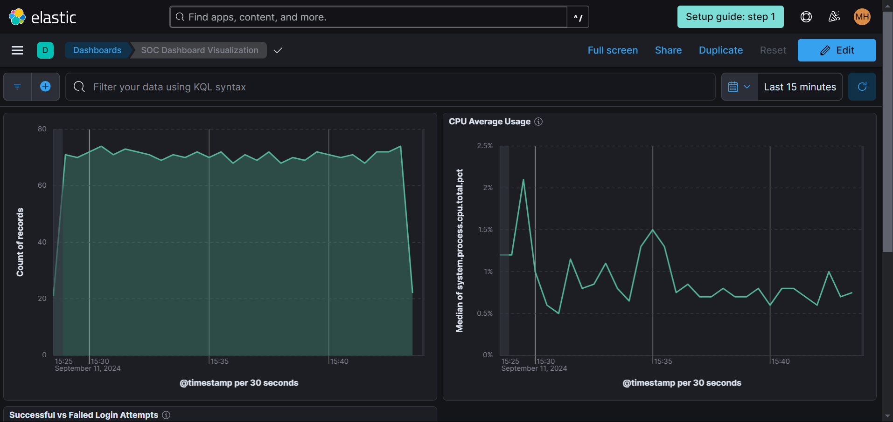

SIEM Lab
I wanted to create my own Security Information and Event Management Lab using Elastic and utilize Kali Linux to demonstrate what the dashboard feeds would look like in a SOC. This helped me gain understanding and hands on experience with the Elastic Stack and its components. The hands-on experience allowed me to gain practical insights into setting up and managing a SOC environment, which is crucial for understanding the day-to-day operations of security professionals.
Description
A SIEM lab is a software solution that collects, analyzes, and correlates security event data from multiple sources in real-time. My home lab uses Elastic, a set of open-source tools designed for searching, analyzing, and visualizing log data in real time, is used as the main driver in this lab. I created two dashboards that allow me to see certain traffic on the virtual machine running Kali Linux. This was so I was able to see the host flood my SIEM with data to prove it worked.
Setting up the Dashboard
Create an Elastic account and install Elastic Defend
Start a free trial, create an Elasticsearch deployment, and choose your region and deployment size.
Install Kali Linux and connect the Elastic service to Kali
curl -L -O https://artifacts.elastic.co/downloads/beats/elastic-agent/elastic-agent-8.15.1-linux-x86_64.tar.gz
tar xzvf elastic-agent-8.15.1-linux-x86_64.tar.gz
cd elastic-agent-8.15.1-linux-x86_64
sudo ./elastic-agent install --url=https://33267d64fcab4abfa38960bab031cb8b.fleet.eastus2.azure.elastic-cloud.com:443 --enrollment-token=UTRxSXc1RUJocXUwbjBRdFhnZnE6YTFKbEZHVUtSaUNMUkxlaDk3SFZmQQ==
Verify the installation
sudo systemctl list-units --type=service | grep elastic-agent
Enable the service
sudo systemctl enable elastic-agent.service
Generating Security Events on the Kali VM using Nmap
Remember to use Nmap responsibly, never conduct scans on a real host. Generate some security events by running commands such as "sudo nmap localhost" "sudo nmap -sS localhost"
Create a Dashboard to Visualize the Events
Create a dashboard by naviagting to Analytics > Dashboard, click on "Add Visualization." I used these metrics: "Bar Visual" for visualization display, "@timestamp" for X-axis, and "Count of records" for Y-axis.
Creating a Detection Rule for Nmap Scans.
I wanted to create an alert everytime my SIEM detected a Nmap Scan. Under the alerts tab in Elastic Defend select "Manage Rules." Select “Create new rule” in the box at the top right. Select the “Custom query” Rule type. Under “Custom query,” type event.action: “nmap_scan” which is the condition for the rule and will match all events with the action “nmap_scan.” Next, click “Continue.”
Fill in the “About rule” section however you prefer. In my example, the severity level is set to High with a Default risk score of 75. Click “Continue."
Runtime for rules can be adjusted under “Schedule rule”. For my example, I chose the scan to run once every five minutes.
In the "Rules Action" section, there are actions that could be taken when the rule is triggered. For my alert, I wanted an email sent to me if a Nmap scan was detected.
Other Visualizations Created
In addtion to the Nmap Scans visualization, I also created an artifacts and CPU usage visualization. These track the artifacts created on the host over time and the CPU usage of the host.
What I learned
This was a learning curve because I have never used Elastic or any of its tools before this project. I gained valuable hands on experience and taught me to visualize and analyze security data in real-time, enhancing my skills in threat detection and incident response.